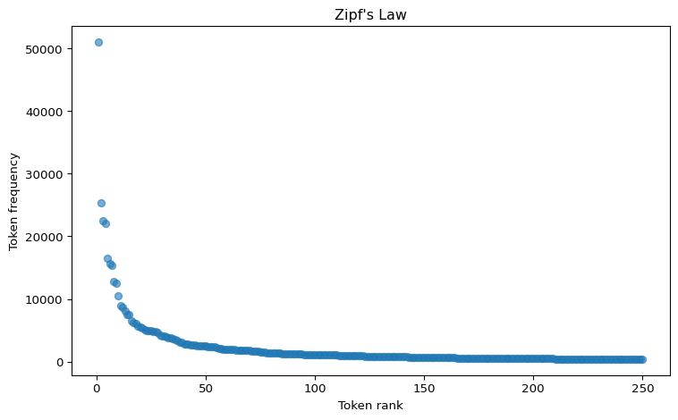

import polars as pl
import matplotlib.pyplot as plt
import numpy as np
from great_tables import GT
import docuscospacy.corpus_analysis as ds
import spacy4 Distributions

4.1 Prepare a corpus
4.1.1 Load the needed packages
4.1.2 Load a corpus
The repository comes with data sets for practice. The conventional way to format text data prior to processing is as a table with a column of document ids (which correspond to file names) and a column of texts.
We’ll load a sample corpus from a URL:
url = "https://github.com/browndw/humanities_analytics/raw/refs/heads/main/data/data_tables/sample_corpus.parquet"
sample_corpus = pl.read_parquet(url)To peek at the data, we’ll look at the first 100 characters in the “text” column:
Code
sample_corpus.with_columns(
pl.col("text").str.slice(0, 100)
).head(10)
shape: (10, 2)
| doc_id | text |
|---|---|
| str | str |
| "acad_01" | "Teachers and other school pers… |
| "acad_02" | "Abstract Does the conflict in … |
| "acad_03" | "January 17, 1993, will mark th… |
| "acad_04" | "Thirty years have passed since… |
| "acad_05" | "ABSTRACT -- A common property … |
| "acad_06" | "Despite some encouraging signs… |
| "acad_07" | "evaluation component. Similarl… |
| "acad_08" | "Section: Education "A lab is w… |
| "acad_09" | "In 1968, the thirtieth anniver… |
| "acad_10" | "monologue -- and of Novas Calv… |
4.1.3 Load the spaCy model
We’ll use the DocuScope-tagged spaCy model for tokenization and tagging:
nlp = spacy.load("en_docusco_spacy")And process the corpus:
ds_tokens = ds.docuscope_parse(sample_corpus, nlp)Performance: Corpus processing completed in 68.78sCheck the result:
Code
ds_tokens.head()
shape: (5, 6)
| doc_id | token | pos_tag | ds_tag | pos_id | ds_id |
|---|---|---|---|---|---|
| str | str | str | str | u32 | u32 |
| "acad_01" | "Teachers " | "NN2" | "Character" | 1 | 1 |
| "acad_01" | "and " | "CC" | "Untagged" | 2 | 2 |
| "acad_01" | "other " | "JJ" | "InformationTopics" | 3 | 3 |
| "acad_01" | "school " | "NN1" | "InformationTopics" | 4 | 3 |
| "acad_01" | "personnel " | "NN2" | "Character" | 5 | 4 |
4.2 Document variables (Name your files systematically!)
Important
File names can encode important meta-data. In this case, the names include text-types, much like the Corpus of Contemporary American English.
This is extremely important. When you build your own corpora, you want to purposefully and systematically name your files and organize your directories. This will save you time and effort later in your analysis.
We can extract the meta-data from the file names using polars string operations. Notice how the doc_id values start with prefixes like “acad” or “fic”. We can extract those:
sample_corpus.select(
pl.col("doc_id").str.extract(r"^([a-z]+)", 1).alias("text_type")
).unique()
shape: (8, 1)
| text_type |
|---|
| str |
| "spok" |
| "fic" |
| "acad" |
| "web" |
| "news" |
| "tvm" |
| "mag" |
| "blog" |
This meta-data is already embedded in our tokens table via the doc_id column, so we can use it for grouping and filtering in our analyses.
Why This Matters
Frequency analysis is foundational to corpus linguistics and computational text analysis. Understanding word distributions helps us:
- Identify patterns: What words characterize a text type or author?
- Make comparisons: How does academic writing differ from fiction?
- Detect anomalies: Are certain words unusually common or rare?
- Inform decisions: Should we remove stopwords? Weight by frequency?
But frequency alone can be misleading—a word might be common because it appears many times in one document, or because it appears once in every document. This is why we need dispersion measures alongside frequency counts.
4.3 Create a frequency table
The frequency_table() function creates a comprehensive summary of token frequencies across our corpus:
wc = ds.frequency_table(ds_tokens)Check the result:
Code
wc.head(10)
shape: (10, 5)
| Token | Tag | AF | RF | Range |
|---|---|---|---|---|
| str | str | u32 | f64 | f64 |
| "the" | "AT" | 51032 | 49493.494717 | 100.0 |
| "and" | "CC" | 25285 | 24522.711513 | 100.0 |
| "of" | "IO" | 22524 | 21844.949737 | 100.0 |
| "a" | "AT1" | 21998 | 21334.807509 | 100.0 |
| "to" | "TO" | 16514 | 16016.13834 | 100.0 |
| "in" | "II" | 15694 | 15220.85958 | 100.0 |
| "i" | "PPIS1" | 15431 | 14965.788466 | 100.0 |
| "it" | "PPH1" | 12860 | 12472.298598 | 100.0 |
| "you" | "PPY" | 12448 | 12072.719514 | 100.0 |
| "is" | "VBZ" | 10565 | 10246.487923 | 100.0 |
The frequency table contains columns for:
Token: The word or tokenAF: Absolute frequency (total count across all documents)RF: Relative frequency (per million tokens)Range: Number of documents containing the tokenDP: Deviation of Proportions (dispersion measure)
4.4 Some properties of token frequencies
Just glancing at the top of the frequency table, a couple of things are obvious. The first is that on their own, frequencies aren’t obviously interpretable. The most frequent words in most English language corpora will look much like this one—dominated by function words like the, of, and and.
4.4.1 Zipf’s Law
Another fundamental property of word (or token) frequencies is called Zipf’s Law. To get a sense of what it is and its implications, let’s create a simple plot.
We’ll add a row index (which we’ll call rank) and take the first 250 rows:
plot_df = wc.with_row_index("rank", offset=1).head(250)And we can use matplotlib to create a simple scatter plot of rank vs. absolute frequency:
Code
x = plot_df.select("rank").to_numpy()
y = plot_df.select("AF").to_numpy()
plt.figure(figsize=(8, 5))
plt.scatter(x, y, alpha=0.6)
plt.xlabel('Token rank')
plt.ylabel('Token frequency')
plt.title("Zipf's Law")
plt.tight_layout()
plt.show()
The steep power-law curve you’re seeing—where a small number of tokens account for the vast majority of occurrences—holds true for almost any corpus. This is Zipf’s Law: the frequency of any word is inversely proportional to its rank in the frequency table. The most common word appears roughly twice as often as the second most common word, three times as often as the third most common word, and so on.
Why Zipf’s Law Matters
This distribution has profound implications for text analysis:
- Common tokens dominate: The top 100 words often account for 50%+ of all tokens
- Long tail of rare words: Most unique words appear only a few times
- Statistical challenges: Many standard statistical methods assume normal distributions, not power laws
- Sampling concerns: Even large corpora may have insufficient data for rare words
Understanding this distribution helps us choose appropriate analysis methods and interpret results correctly.
4.5 Dispersions
One fundamental question we might have when looking at token frequencies is: what is driving the frequency of a given token?
For example, let’s say we find that raccoon is particularly frequent in our data. Does that mean we have a particularly raccoon-heavy set of texts? Or is it that 1 or 2 texts are all about raccoons while the rest never mention them?
For this reason, we might want to know how dispersed tokens are. One simple way to report this is to see what percentage of our texts a given token appears in.
The limitation to this approach is that our corpus may not contain texts of equal length. If some are shorter than others, the opportunity for a token to appear will not be equal.
Thus there are a variety of dispersion measures available. Some of these can be calculated using the dispersions_table() function. For this, we simply pass our original tokens object to the function:
dt = ds.dispersions_table(ds_tokens)Note that for some dispersion measures, the higher value means that the token is more dispersed:
Code
dt.head(10)
shape: (10, 11)
| Token | Tag | AF | RF | Carrolls_D2 | … | Lynes_D3 | DC | Juillands_D | DP | DP_norm |
|---|---|---|---|---|---|---|---|---|---|---|
| str | str | u64 | f64 | f64 | … | f64 | f64 | f64 | f64 | f64 |
| "the" | "AT" | 51032 | 49493.494717 | 0.988606 | … | 0.967496 | 0.962878 | 0.981737 | 0.143405 | 0.143702 |
| "and" | "CC" | 25285 | 24522.711513 | 0.990274 | … | 0.973234 | 0.967056 | 0.983422 | 0.125533 | 0.125794 |
| "of" | "IO" | 22524 | 21844.949737 | 0.979403 | … | 0.938009 | 0.9353 | 0.974667 | 0.197503 | 0.197913 |
| "a" | "AT1" | 21998 | 21334.807509 | 0.992072 | … | 0.978803 | 0.97165 | 0.985503 | 0.111006 | 0.111236 |
| "to" | "TO" | 16514 | 16016.13834 | 0.989978 | … | 0.973467 | 0.963931 | 0.983837 | 0.122953 | 0.123208 |
| "in" | "II" | 15694 | 15220.85958 | 0.986626 | … | 0.960228 | 0.957547 | 0.979665 | 0.155209 | 0.155531 |
| "i" | "PPIS1" | 15431 | 14965.788466 | 0.908625 | … | 0.731843 | 0.677248 | 0.94832 | 0.428251 | 0.42914 |
| "it" | "PPH1" | 12860 | 12472.298598 | 0.976747 | … | 0.936577 | 0.918503 | 0.974995 | 0.196682 | 0.19709 |
| "you" | "PPY" | 12448 | 12072.719514 | 0.897063 | … | 0.659539 | 0.654258 | 0.941817 | 0.450321 | 0.451255 |
| "is" | "VBZ" | 10565 | 10246.487923 | 0.969252 | … | 0.914525 | 0.891143 | 0.97051 | 0.229789 | 0.230266 |
The most commonly used dispersion measure is Deviation of Proportions (DP), which ranges from 0 to 1:
- DP = 0: Token appears in perfectly equal proportions across all documents
- DP = 1: Token appears in only one document
- Higher DP = more uneven distribution
Let’s compare the DP values for a couple of tokens:
dt.filter(pl.col("Token").is_in(["the", "data", "school"])).select(["Token", "DP"]).head(3)
shape: (3, 2)
| Token | DP |
|---|---|
| str | f64 |
| "the" | 0.143405 |
| "school" | 0.670521 |
| "data" | 0.844023 |
Notice how the has very low DP (close to 0), meaning it’s evenly distributed across documents—it’s a true high-frequency word. Compare this to data or school, which may have higher DP values if they cluster in academic texts.
When Dispersion Matters
Imagine comparing two corpora: one about climate science and one about cooking. The word heat might appear frequently in both. But in the climate corpus, it might appear in 90% of documents (high dispersion, DP ≈ 0.2), while in the cooking corpus it might appear in only 20% of documents (low dispersion, DP ≈ 0.7)—all the recipes for baking.
This tells us something important: heat is a core term in climate discourse but a specialized term in cooking discourse. Frequency alone wouldn’t reveal this distinction.
4.6 Create a document-feature matrix
So far we’ve looked at individual token frequencies and dispersions. But many text analysis tasks require us to represent entire documents numerically—for clustering, classification, or statistical comparison. This is where document-feature matrices (DFMs) come in.
A DFM converts each document into a vector of numbers, where each column represents a feature (like a word or tag) and each cell contains a count. This representation enables mathematical operations on texts.
With our tokens object we can create a DFM using the tags_dtm() function. In this case, our features are POS (part-of-speech) tags rather than individual tokens. Each cell contains a count of how many times that tag appears in that document:
dfm = ds.tags_dtm(ds_tokens)Check the result:
Code
dfm.head()
shape: (5, 178)
| doc_id | NN1 | JJ | II | AT | … | RT21 | NN121 | NP | RGQV32 | RR41 |
|---|---|---|---|---|---|---|---|---|---|---|
| str | u32 | u32 | u32 | u32 | … | u32 | u32 | u32 | u32 | u32 |
| "acad_01" | 451 | 279 | 218 | 182 | … | 0 | 0 | 0 | 0 | 0 |
| "acad_02" | 432 | 276 | 208 | 279 | … | 0 | 0 | 0 | 0 | 0 |
| "acad_03" | 422 | 187 | 167 | 234 | … | 0 | 0 | 0 | 0 | 0 |
| "acad_04" | 469 | 270 | 161 | 206 | … | 0 | 1 | 0 | 0 | 0 |
| "acad_05" | 445 | 201 | 169 | 180 | … | 0 | 0 | 0 | 0 | 0 |
The DFM has a column for doc_id and then columns for every POS tag (NN1 = singular noun, JJ = adjective, etc.).
4.6.1 Using document-feature matrices
We can use the DFM to calculate document-level statistics. For example, we can get the total word counts for each document by summing across all tag columns:
Code
# Get total word counts per document
doc_totals = dfm.with_columns(
pl.sum_horizontal(pl.exclude("doc_id")).alias("total")
).select("doc_id", "total")
doc_totals.head(10)
shape: (10, 2)
| doc_id | total |
|---|---|
| str | u32 |
| "acad_01" | 2533 |
| "acad_02" | 2558 |
| "acad_03" | 2531 |
| "acad_04" | 2542 |
| "acad_05" | 2505 |
| "acad_06" | 2580 |
| "acad_07" | 2444 |
| "acad_08" | 2538 |
| "acad_09" | 2554 |
| "acad_10" | 2538 |
4.6.2 Aggregating by text type
We can use the text-type information embedded in our doc_id values to compare totals across different kinds of texts:
# Extract text type and calculate totals
totals = (
doc_totals
.with_columns(
pl.col("doc_id").str.extract(r"^([a-z]+)", 1).alias("text_type")
)
.group_by("text_type")
.agg(pl.col("total").sum())
.sort("text_type")
)We can format this as a table using great_tables:
Code
GT(totals)| text_type | total |
|---|---|
| acad | 126315 |
| blog | 128556 |
| fic | 130292 |
| mag | 129905 |
| news | 128058 |
| spok | 129866 |
| tvm | 130132 |
| web | 127961 |
4.7 Common Pitfalls
Watch Out For
Rare Word Illusion: High-frequency rare words may appear in only one or two documents. Always check dispersion alongside frequency.
Normalization Matters: Comparing raw frequencies across corpora of different sizes is misleading. Always normalize (e.g., per million words).
Function Word Dominance: The most frequent tokens are rarely the most interesting. Consider filtering or focusing on content words.
Text Length Variation: If your corpus has documents of very different lengths, some analyses may be biased toward longer documents.
Case Sensitivity: Remember that tokenization decisions (lowercase vs. mixed case) affect frequency counts. Be consistent and document your choices.
4.8 Discussion Questions
Interpreting Zipf’s Law: What does the power-law distribution of token frequencies suggest about language use? How might this pattern differ in specialized vs. general corpora?
Frequency vs. Importance: The most frequent words are function words (articles, prepositions). What does this tell us about using frequency as a proxy for “importance”? When might frequency be misleading?
Dispersion and Interpretation: Why might a moderately frequent word with high dispersion be more interesting than a high-frequency word with low dispersion? Think of examples from your research area.
Document Length Effects: How might varying document lengths in your corpus affect frequency and dispersion measures? What steps could you take to account for this?
Beyond Single Tokens: This tutorial focuses on individual word frequencies. What might we miss by not considering multi-word expressions, collocations, or n-grams?
Critical Reflection: Frequency tables reduce texts to counts, discarding context, order, and meaning. What are the trade-offs of this reductionist approach? When is it appropriate, and when might it be problematic?
4.9 Key Takeaways
- Frequency tables provide a foundation for corpus analysis, showing how often tokens appear
- Zipf’s Law describes the power-law distribution where a few tokens dominate and most are rare
- Dispersion measures like DP help distinguish between tokens that are evenly distributed vs. clustered in a few documents
- Document-feature matrices convert texts into numerical representations for further analysis
- Normalization (e.g., to per-million-word rates) is essential for comparing corpora of different sizes
- Context matters: Raw frequency counts should always be interpreted in light of corpus composition, text length variation, and research questions
4.10 Further Reading
- Brezina, V. (2018). Statistics in Corpus Linguistics: A Practical Guide. Chapter 3: Frequency.
- Gries, S. Th. (2008). “Dispersions and adjusted frequencies in corpora.” International Journal of Corpus Linguistics 13(4): 403-437.
- Zipf, G. K. (1935). The Psycho-Biology of Language. Houghton, Mifflin.
Ready to Practice?
Head to Mini Lab 03: Frequencies to apply these concepts hands-on. You’ll work with the same corpus and functions, but with opportunities to explore different tokens, create visualizations, and experiment with filtering and aggregation techniques.
The mini lab includes experimentation prompts to help you develop intuitions about when frequency and dispersion measures are most useful in text analysis.